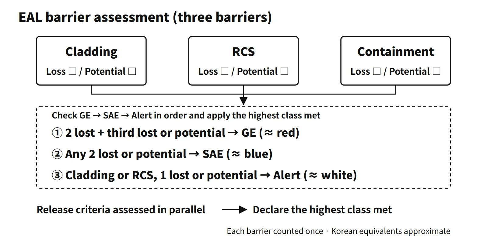

Radiation Protection & Emergency · C-RP-003
Emergency Action Levels (EAL) — The Decision Table That Sets the Emergency Class from Initiating Conditions and Thresholds
Observable thresholds in the licensee's plan that classify an accident within 15 minutes, from the three-barrier matrix to release and natural-hazard criteria.
Emergency action levels (EALs) are predetermined, observable thresholds and conditions used to classify the plant state into a radiation emergency class — instrument readings, radiation monitor indications, operating conditions, entry into emergency operating procedures and the like. The emergency classes themselves are defined in general terms (facility state and expected extent of impact); plant-specific EALs are set in the licensee's radiological emergency plan and approved by the regulator.
Put simply, EALs are plant-specific, observable decision thresholds set in the licensee's radiological emergency plan so that accident conditions are classified into emergency classes quickly and consistently.
Principle and mechanism
Three layers: class ← initiating condition ← threshold
The EAL scheme has three layers:
- Emergency class: in the US, Unusual Event (UE), Alert, Site Area Emergency (SAE) and General Emergency (GE); other schemes use three classes
- Initiating condition (IC): the event or state that corresponds to a class (e.g. "two of three barriers lost + the remaining one potentially lost")
- EAL: the specific indication that recognizes the IC (e.g. "core exit temperature (CET) above a specified value"). Several EALs are attached to one IC with OR logic.
Operators look up the table to set the class. The US requires classification within 15 minutes of the indications becoming available (10 CFR 50 Appendix E IV.C.2), and other plans also aim to declare within 15 minutes.
Recognition categories (NEI 99-01)
The US NEI 99-01 groups ICs by how they are recognized (recognition category). The categories in Rev.6 (November 2012):
| Category | Content | Typical IC |
|---|---|---|
| A (R allowed) | Abnormal radiation levels, radiological effluent | Off-site dose 0.1/1/10 mSv TEDE → Alert/SAE/GE |
| C | Cold shutdown and refueling system malfunction | Loss of RCS level during shutdown |
| E | Independent spent fuel storage installation (ISFSI) | Damage to a storage cask |
| F | Fission-product barriers | FA1, FS1, FG1 |
| H | Hazards (security, earthquake, fire, control room evacuation) | Earthquake exceeding the OBE (UE) |
| S | System malfunction (at power) | Loss of AC power for more than 15 minutes (SAE) |
Rev.6 also allows R in place of A, and licensee material based on Rev.7 (September 2024, endorsed by NRC RG 1.101 Rev.7 in September 2025) uses R.
The barrier matrix (Category F)
EALs judge the three directly monitorable barriers (fuel cladding, reactor coolant system RCS, containment). Each barrier has Loss and Potential Loss thresholds.
- FA1 (Alert): loss or potential loss of either the cladding or the RCS
- FS1 (SAE): loss or potential loss of any two barriers
- FG1 (GE): loss of any two barriers + loss or potential loss of the third
A barrier is counted only once, since Loss includes Potential Loss. The cladding and RCS are weighted more heavily, so loss or potential loss of the containment alone is not FA1 and is judged by EALs in other categories.
![Cutaway of a PWR containment with the fuel cladding, reactor coolant system and containment marked, beside a table of NEI 99-01 PWR example thresholds: cladding loss at coolant dose-equivalent I-131 300 µCi/g, high containment radiation or a CET example of 1,200 °F (649 °C) and potential loss at a CET example of 700 °F (371 °C); RCS loss with leakage requiring ECCS and potential loss when the standby charging pump is needed or the PTS cooldown rate is exceeded; containment loss with integrity lost, an unisolable path or an SG faulted outside containment and potential loss at pressure above a set value, an explosive mixture or core cooling not restored within 15 minutes; below, the order GE (FG1) checked first, else SAE (FS1), else Alert (FA1)](../../assets/images/concepts/c-rp-003-emergency-action-levels/fig1-barrier-matrix.webp)
Older three-class plans used the same logic, with a highest-class condition of "two of three barriers lost + the remaining one at risk". Example PWR thresholds from NEI 99-01 Rev.6 (Table 9-F-3; actual values are site-specific):
- Cladding: Loss at coolant dose-equivalent I-131 of 300 µCi/g, a containment radiation monitor reading above a set value, or a CET example of 1,200 °F (649 °C); Potential Loss at a CET example of 700 °F (371 °C)
- RCS: Loss when RCS or SG tube leakage requires ECCS; Potential Loss when the leakage needs the standby charging pump or the PTS cooldown rate is exceeded
- Containment: Loss when integrity is lost while isolation is required, an unisolable path exists or an SG is faulted outside containment; Potential Loss at containment pressure above a set value, an explosive mixture, or core cooling not restored within 15 minutes of entering the restoration procedure
What it means in a plant
Judging "a large release of radioactive material to the environment"
Older three-class plans used a highest-class EAL that judges the release itself against a site-boundary dose-rate criterion (whole body and thyroid), evaluated with a dose assessment program, from radiation monitor readings and the release rate, or — for a release the effluent monitors do not see — from containment activity, pressure and release rate or field measurements at the site boundary.
The radiological category of NEI 99-01 steps by projected integrated dose, not dose rate. AA1, AS1 and AG1 are TEDE 0.1, 1 and 10 mSv (thyroid 0.5, 5 and 50 mSv), that is 1 %, 10 % and 100 % of the EPA PAG. There are three paths: monitor readings (sustained for 15 minutes), dose assessment with actual weather, and field surveys (dose rate of 1,000 mR/h expected to last 60 minutes or more). A dose-rate criterion (mSv/h) and a projected dose (mSv) have different dimensions, even if similar numbers appear.
![Log-scale ladder of NEI release initiating conditions by projected TEDE: Alert AA1 above 0.1 mSv (thyroid 0.5 mSv), SAE AS1 above 1 mSv (5 mSv) and GE AG1 above 10 mSv (50 mSv), at 1, 10 and 100 % of the EPA PAG; on the right, the four ways AG1 is recognized: effluent monitor above the precalculated value for 15 minutes or more, dose assessment with actual meteorology, a field survey above 1,000 mR/h expected to last 60 minutes or more, and field sample analysis; a note that older plans used a site-boundary dose-rate criterion instead](../../assets/images/concepts/c-rp-003-emergency-action-levels/fig2-release-dose-ladder.webp)
Events threatening core melt with a serious release
Even before a barrier is lost, a combination of lost mitigating functions can call for the highest class (older PWR plan examples):
- LOCA + no safety injection + threatened loss of containment integrity
- Loss of secondary heat removal + feed-and-bleed unavailable (condensate and feedwater failed, auxiliary feedwater unavailable beyond a specified time)
- Reactor fails to trip and stays critical + no safety injection + fuel damage
- Loss of all AC power + turbine-driven auxiliary feedwater pump unavailable (auxiliary feedwater unavailable beyond a specified time)
- LOCA + loss of containment heat removal (rising recirculation sump temperature threatening cavitation of the low-pressure safety injection pumps)
The same event escalates over time: loss of AC power starts at a low class, rises if it persists beyond a specified time, and reaches the highest class when auxiliary feedwater is also lost. In NEI 99-01, loss of all AC power for more than 15 minutes (hot shutdown or above) is an SAE, a threshold assigned from PSA insights.
Natural-hazard EALs and the emergency facilities
Natural-hazard EALs are tied to the plant's design-basis values. In an older three-class PWR plan:
- Lowest class: reference seismic monitor value at or above the operating basis earthquake (OBE) and confirmed as a real earthquake; flooding of safety-related buildings by flood or tsunami; very high sustained wind speed
- Middle class (hot shutdown or above): earthquake at or above the safe shutdown earthquake (SSE); a higher wind-speed threshold
- Highest class: when an earthquake at or above the SSE or another major accident seriously damages systems and a release is expected
If one unit declares an emergency because of an earthquake, the other units on the same site declare too; alarms from equipment faults or during testing are excluded. On the first declaration the technical support center and operational support center are activated; at the higher classes, the emergency operations facility (the licensee's emergency headquarters) and the off-site emergency management center are activated.
Regulatory and design criteria
The references below are US and international examples.
- United States: 10 CFR 50.47(b)(4) (standard classification and EAL scheme), Appendix E IV.B (EALs based on in-plant instrument conditions; changes to the whole scheme require prior approval) and IV.C.2 (15-minute classification). NEI 99-01 Rev.6 (2012) was endorsed by the NRC in 2013, and Rev.7 (September 2024) by RG 1.101 Rev.7. Passive plants use NEI 07-01.
- IAEA GSR Part 7 (2015): requires an emergency classification system based on predetermined criteria.
- Licensee radiological emergency plan: contains the declaration conditions and criteria tables for each unit, including the plant's own seismic values.
Easily confused pairs
| Definition of emergency class | Emergency action level (EAL) | |
|---|---|---|
| Basis | Regulations and emergency-preparedness requirements | Licensee radiological emergency plan (regulator-approved) |
| Content | Facility state + expected extent of impact (inside buildings / within the site / beyond the site) | Observable thresholds such as instrument readings, monitors, procedure entry |
| Scope | Common to all nuclear facilities | Plant- and unit-specific (seismic values and monitor numbers differ) |
| Older three-class plans | US NEI 99-01 | |
|---|---|---|
| Classes | 3 | UE, Alert, SAE, GE (4) |
| Format | List of declaration conditions per class + table of indicator values | Recognition category × class matrix |
| Release criterion | Site-boundary dose rate (mSv/h) | Projected off-site integrated dose (1, 10, 100 % of PAG) |
| Barriers | Highest class: 2 lost + 1 at risk | Stepwise FA1, FS1, FG1 |
Class assignments can differ between schemes: an older three-class plan put a LOCA beyond charging pump capacity in its middle class, whereas in NEI an RCS loss alone is Alert. EOPs are procedures that mitigate an accident; EALs are criteria that classify it. EOP entry is sometimes used as an EAL indication.
Key points at a glance
- Definition: observable thresholds (instruments, monitors, procedure entry) that classify the plant state into emergency classes.
- Basis: general class definitions → plant-specific EALs in the licensee's radiological emergency plan, approved by the regulator.
- Structure: class ← initiating condition (IC) ← EALs (OR logic); classify and declare within 15 minutes.
- Recognition categories (NEI 99-01): radiation (A, R allowed), cold shutdown (C), ISFSI (E), barriers (F), hazards (H), systems (S).
- Barrier judgment: loss or potential loss of cladding, RCS, containment → one (cladding or RCS) Alert, two SAE, two lost + the third lost or potentially lost GE.
- Release criterion: NEI uses projected dose (TEDE 0.1 / 1 / 10 mSv = 1 / 10 / 100 % of the PAG); older plans used a site-boundary dose-rate criterion — different dimensions.
- Threatened core melt (highest-class examples): LOCA + no SI; feedwater and F&B unavailable; ATWS + no SI; SBO + TDAFW unavailable; loss of containment heat removal.
- Natural hazards: above OBE → lowest class; above SSE → middle class or higher.
- Cautions: no declaration on an alarm alone (confirm it is real); highest class takes precedence; terminate after stabilizing below the lowest class's criteria.
